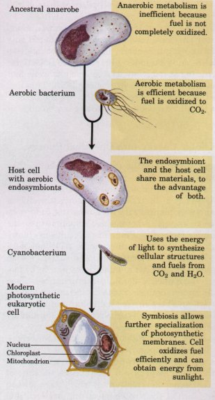
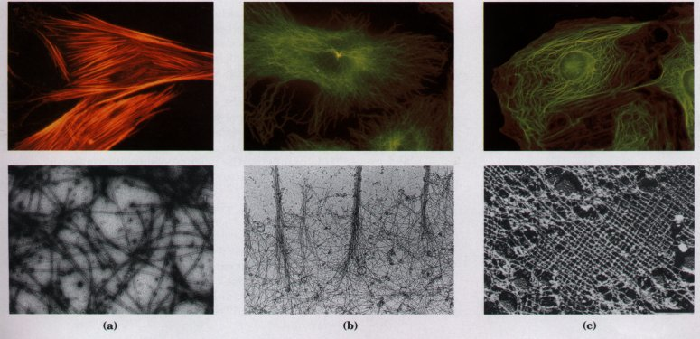
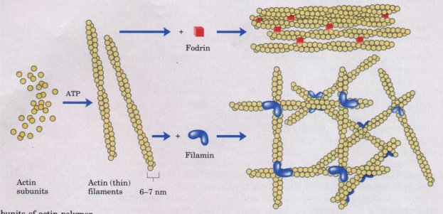
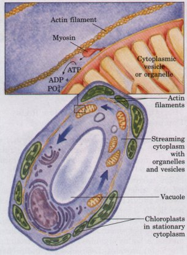
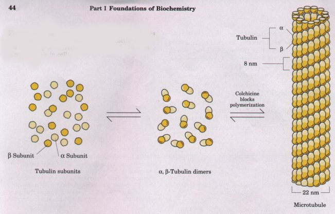
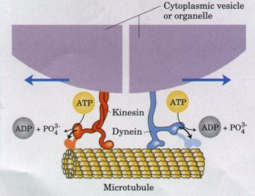
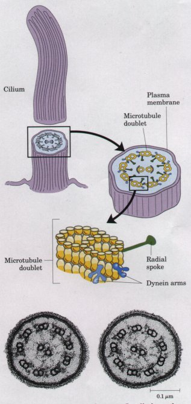
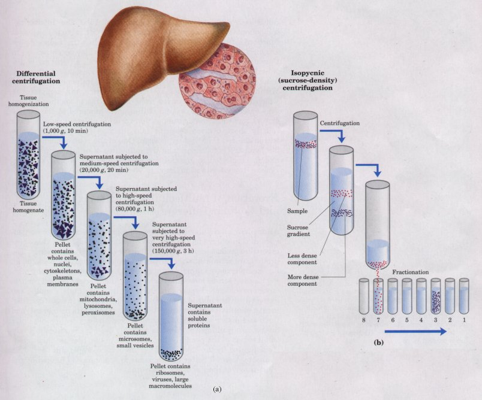

| Several independent lines of evidence
suggest that the mitochondria and chloroplasts of modern
eukaryotes were derived during evolution from aerobic
bacteria and cyanobacteria that took up endosymbiotic
residence in early eukaryotic cells (Fig. 2-17; see also
Fig. 2-7). Mitochondria are always derived from
preexisting mitochondria, and chloroplasts from
chloroplasts, by simple fission, just as bacteria
multiply by fission. Mitochondria and chloroplasts are in
fact semiautonomous; they contain DNA, ribosomes, and the
enzymatic machinery to synthesize proteins encoded in
their DNA. Sequences in mitochondrial DNA are strikingly
similar to sequences in certain aerobic bacteria, and
chloroplast DNA shows strong sequence homology with the
DNA of certain cyanobacteria. The ribosomes found in
mitochondria and chloroplasts are more similar in size,
overall structure, and ribosomal RNA sequences to those
of bacteria than to those in the cytoplasm of the
eukaryotic cell. The enzymes that catalyze protein
synthesis in these organelles also resemble those of the
bacteria more closely. If mitochondria and chloroplasts are the descendants of early bacterial endosymbionts, some of the genes present in the original freeliving bacteria must have been transferred into the nuclear DNA of the host eukaryote over the course of evolution. Neither mitochondria nor chloroplasts contain all of the genes necessary to specify all of their proteins. Most of the proteins of both organelles are encoded in nuclear genes, translated on cytoplasmic ribosomes, and subsequently imported into the organelles. |
 Figure 2-17 A plausible theory for the evolutionary origin of mitochondria and chloroplasts. It is based on a number of striking biochemical and genetic similarities between certain aerobic bacteria and mitochondria, and between certain cyanobacteria and chloroplasts. During the evolution of eukaryotic cells, the invading bacteria became symbiotic with the host cell. Ultimately the cytoplasmic bacteria became the mitochondria and chloroplasts of modern cells. |
Several types of protein filaments visible with the electron microscope crisscross the eukaryotic cell, forming an interlocking three-dimensional meshwork throughout the cytoplasm, the cytoskeleton. There are three general types of cytoplasmic filaments: actin filaments, microtubules, and intermediate filaments (Fig. 2-18). They differ in width (from about 6 to 22 nm), composition, and specific function, but all apparently provide structure and organization to the cytoplasm and shape to the cell. Actin filaments and microtubules also help to produce the motion of organelles or of the whole cell.
Each of the cytoskeletal components is composed of simple protein subunits that polymerize to form filaments of uniform thickness. These filaments are not permanent structures; they undergo constant disassembly into their monomeric subunits and reassembly into filaments. Their locations in cells are not rigidly fixed, but may change dramatically with mitosis, cytokinesis, or changes in cell shape. All types of filaments associate with other proteins that cross-link filaments to themselves or to other filaments, influence assembly or disassembly, or move cytoplasmic organelles along the filaments.

Figure 2-18 The three types of cytoplasmic filaments. The upper panels show epithelial cells photographed after treatment with antibodies that bind to and specifically stain (a) actin filaments bundled together to form "stress fibers," (b) microtubules radiating from the cell center, and (c) intermediate filaments, extending throughout the cytoplasm. For these experiments, antibodies that specifically recognize actin, tubulin, or intermediate filament proteins are covalently attached to a fluorescent compound. When the cell is viewed with a fluorescence microscope, only the stained structures are visible. The lower panels show each type of filament as visualized by electron microscopy.
Actin is a protein present in virtually all eukaryotes, from the protists to the vertebrates. In the presence of ATP, the monomeric protein spontaneously associates into linear, helical polymers, 6 to 7 nm in diameter, called actin filaments or microfilaments (Fig. 2-19).

Figure 2-19 Individual subunits of actin polymerize to form actin filaments. The protein filamin holds two filaments together where they cross at right angles. The filaments are cross-linked by another protein, fodrin, to form side-by-side aggregates or bundles.
The importance of actin polymerization and depolymerization is clear from the effects of cytochalasins, compounds that bind to actin and block polymerization. Cells treated with a cytochalasin lose actin filaments and their ability to carry out cytokinesis, phagocytosis, and amoeboid movement. However, chromatid separation at mitosis is not affected, ruling out an essential role for actin in this process. Compounds such as cytochalasins, which are naturally occurring poisons or specific toxins, are often very helpful in experimental studies in pinpointing the important participants in a biological process.
Cells contain proteins that bind to actin monomers or filaments and influence' the state of actin aggregation (Fig. 2-19). Filamin and fodrin cross-link actin filaments to each other, stabilizing the meshwork and greatly increasing the viscosity of the medium in which the filaments are suspended; a concentrated solution of actin in the presence of filamin is a gel too viscous to pour. Large numbers of actin filaments bound to specific plasma membrane proteins lie just beneath and more or less parallel to the plasma membrane, conferring shape and rigidity on the cell surface.
| Actin filaments bind to a family of proteins called myosins, enzymes that use the energy of ATP breakdown to move themselves along the actin filament in one direction. The simplest members of this family, such as myosin I, have a globular head and a short tail (Fig. 2-20). The head binds to and moves along an actin filament, driven by the breakdown of ATP. The tail region binds to the membrane of a cytoplasmic organelle, dragging the organelle behind as the myosin head moves along the actin filament. It appears likely that myosins of this type bind to various organelles, providing specific transport systems to move each type of organelle through the cytoplasm. This motion is readily seen in living cells such as the giant green alga Nitella; endoplasmic reticulum, as well as mitochondria, nucleus, and other membrane-bound organelles and vesicles, move uniformly around the cell at 50 to 75 μm/s in a process called cytoplasmic streaming (Fig. 2-20). This motion has the effect of mixing the cytoplasmic contents of the enormous algal cell much more efficiently than would occur by diffusion alone. |  Figure 2-20 Myosin molecules move along actin filaments using energy from ATP. Cytoplasmic streaming is produced in the giant green alga Nitella as myosin pulls organelles around a track of actin filaments. The chloroplasts of Nitella are located in the layer of stationary cytoplasm that lies between the actin filaments and the cell membrane. |
A larger form of myosin is found in muscle cells, and also in the cytoplasm of many nonmuscle cells. This type of myosin also has a globular head that binds to and moves along actin filaments in an ATP-driven reaction, but it has a longer tail, which permits myosin molecules to associate side by side to form thick filaments (see Fig. 7-31). Contractile systems composed of actin and myosin occur in a wide variety of organisms, from slime molds to humans. Actin-myosin complexes form the contractile ring that squeezes the cytoplasm in two during cytokinesis in all eukaryotes. In multicellular animals, muscle cells are filled with highly organized arrays of actin (thin) filaments and myosin (thick) filaments, which produce a coordinated contractile force by ATP-driven sliding of actin filaments past stationary myosin filaments.
Like actin filaments, microtubules form spontaneously from their monomeric subunits, but the polymeric structure of microtubules is slightly more complex. Dimers of α- and β-tubulin form linear polymers (protofilaments), 13 of which associate side by side to form the hollow microtubule, about 22 nm in diameter (Fig. 2-21). Most microtubules undergo continual polymerization and depolymerization in cells by addition of tubulin subunits primarily at one end and dissociation at the other. Microtubules are present throughout the cytoplasm, but are concentrated in specific regions at certain times. For example, when sister chromatids move to opposite poles of a dividing cell during mitosis, a highly organized array of microtubules (the mitotic spindle; Fig. 2-14) provides the framework and probably the motive force for the separation of chromatids. Colchicine, a poisonous alkaloid from meadow saffron, prevents tubulin polymerization. Colchicine treatment reversibly blocks the movement of chromatids during mitosis, demonstrating that microtubules are required for this process.

Figure 2-21 Microtubules are formed from dimers of the proteins α- and β-tubulin. Colchicine blocks the assembly of microtubules, and can be used to arrest mitosis in cells.
| Microtubules, like actin filaments, associate with a variety of proteins that move along them, form cross-bridges, or influence their state of polymerization. Kinesin and cytoplasmic dynein, proteins found in the cytoplasm of many cells, bind to microtubules and move along them using the energy of ATP to drive their motion (Fig. 2-22). Each protein is capable of associating with specific organelles and pulling them along the microtubule over long distances at rates of about 1μm/s. The beating motion of cilia and eukaryotic flagella also involves dynein and microtubules. |  Figure 2-22 Kinesin and dynein are ATP-driven molecular engines that move along microtubular "rails." |
| Cilia and flagella,
motile structures extending from the surface of many
protists and certain cells of animals and plants, are all
constructed on the same microtubule-based architectural
plan (Fig. 2-23). (Although they bear the same name, the
flagella of bacteria (p. 28) are completely different in
structure and in action from the flagella of eukaryotes.)
Eukaryotic cilia and flagella, which are sheathed in an
extension of the plasma membrane, contain nine fused
pairs of microtubules arranged around two central
microtubules (the 9 + 2 arrangement; Fig. 2-23). Ciliary
and flagellar motion results from the coordinated sliding
of outer doublet microtubules relative to their
neighbors, driven by ATP. The motions of cilia and
flagella propel protists through their surrounding
medium, in search of food, or light, or some condition
essential to their survival. Sperm are also propelled by
flagellar beating. Ciliated cells in tissues such as the
trachea and oviduct move extracellular fluids past the
surface of the ciliated tissue. The contraction of skeletal muscle, the propelling action of cilia and flagella, and the intracellular transport of organelles all rely on the same fundamental mechanism: the splitting of ATP by proteins such as kinesin, myosin, and dynein drives sliding motion along microfilaments or microtubules. |
 Figure 2-23 Cilia and eukaryotic flagella have the same architecture: nine microtubule doublets surround a central pair of microtubules. Cross section of cilia shows the 9 + 2 arrangement of microtubules. |
The third type of cytoplasmic filament is a family of structures with dimensions (diameter 8 to 10 nm) intermediate between actin filaments and microtubules. Several different types of monomeric protein subunits form intermediate filaments. Some cells contain large amounts of one type; some types of intermediate filament are absent from certain cells; and some cell types apparently lack intermediate filaments altogether. As is the case for actin filaments and microtubules, intermediate filament formation is reversible, and the cytoplasmic distribution of these structures is subject to regulated changes.
The function of intermediate filaments is probably to provide internal mechanical support for the cell and to position its organelles. Vimentin (Mr 57,000) is the monomeric subunit of the intermediate filaments found in the endothelial cells that line blood vessels, and in adipocytes (fat cells). Vimentin fibers appear to anchor the nucleus and fat droplets in specific cellular locations. Intermediate filaments composed of desmin (Mr 55,000) hold the Z disks of striated muscle tissue in place. Neurofilaments are constructed of three different protein subunits (Mr 70,000, 150,000, and 210,000), and provide rigidity to the long extensions (axons) of neurons. In the glial cells that surround neurons, intermediate filaments are constructed from glial fibrillary acidic protein (Mr 50,000).
The intermediate filaments composed of keratins, a family of structural proteins, are particularly prominent in certain epidermal cells of vertebrates, and form covalently cross-linked meshworks that persist even after the cell dies. Hair, fingernails, and feathers are among the structures composed primarily of keratins.
The picture that emerges from this brief survey is of a eukaryotic cell with a cytoplasm crisscrossed by a meshwork of structural fibers, throughout which extends a complex system of membrane-bounded compartments (see Fig. 2-8). Both the filaments and the organelles are dynamic: the filaments disassemble and reassemble elsewhere; membranous vesicles bud from one organelle, move to and join another. l~ansport vesicles, mitochondria, chloroplasts, and other organelles move through the cytoplasm along protein filaments, drawn by kinesin, cytoplasmic dynein, myosin, and perhaps other similar proteins. Exocytosis and endocytosis provide paths between the cell interior and the surrounding medium, allowing for the secretion of proteins and other components produced within the cell and the uptake of extracellular components. The intracellular membrane systems segregate specific metabolic processes, and provide surfaces on which certain enzyme-catalyzed reactions occur.
Although complex, this organization of the cytoplasm is far from random. The motion and positioning of organelles and cytoskeletal elements are under tight regulation, and at certain stages in a eukaryotic cell's life, dramatic, finely orchestrated reorganizations occur, such as spindle formation, chromatid migration to the poles, and nuclear envelope disintegration and re-formation during mitosis. The interactions between the cytoskeleton and organelles are noncovalent, reversible, and subject to regulation in response to various intracellular and extracellular signals. Cytoskeletal rearrangements are modulated by Ca2+ and by a variety of proteins.
A major advance in the biochemical study of cells was the development of methods for separating organelles from the cytosol and from each other. In a typical cellular fractionation, cells or tissues are disrupted by gentle homogenization in a medium containing sucrose (about 0.2 M). This treatment ruptures the plasma membrane but leaves most of the organelles intact. (The sucrose creates a medium with an osmotic pressure similar to that within organelles; this prevents diffusion of water into the organelles, which would cause them to swell, burst, and spill their contents.)
Organelles such as nuclei, mitochondria, and lysosomes differ in size and therefore sediment at different rates during centrifugation. They also differ in specific gravity, and they "float" at different levels in a density gradient (Fig. 2-24). Differential centrifugation results in a rough fractionation of the cytoplasmic contents, which may be further purified by isopycnic centrifugation. In this procedure, organelles of different buoyant densities (the result of different ratios of lipid and protein in each type of organelle) are separated on a density gradient. By carefully removing material from each region of the gradient and observing it with a microscope, the biochemist can establish the position of each organelle and obtain purified organelles for further study. In this way it was established, for example, that lysosomes contain degradative enzymes, mitochondria contain oxidative enzymes, and chloroplasts contain photosynthetic pigments. The isolation of an organelle enriched in a certain enzyme is often the first step in the purification of that enzyme.

Figure 2-24 A tissue such as liver is mechanically homogenized to break cells and disperse their contents in an aqueous buffer. The large and small particles in this suspension can be separated by centrifugation at different speeds (a), or particles of different density can be separated by isopycnic centrifugation (b). In isopycnic centrifugation, a centrifuge tube is filled with a solution, the density of which increases from top to bottom; some solute such as sucrose is dissolved at different concentrations to produce this density gradient. When a mixture of organelles is layered on top of the density gradient and the tube is centrifuged at high speed, individual organelles sediment until their buoyant density exactly matches that in the gradient. Each layer can be collected separately.